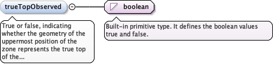
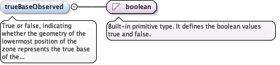

True or false, indicating whether the geometry of theuppermost position of the zone represents the true top of thefeature being defined (true) or (false) whether the top representsthe upper extent of the zone that is described by the extent of thesampling feature itself.
Diagram

Type
boolean
Properties
content
simple
minOccurs
0
Source
<element minOccurs="0" name="trueTopObserved" type="boolean"><annotation><documentation>True or false, indicating whether the geometry of the uppermost position of the zone represents the true top of the feature being defined (true) or (false) whether the top represents the upper extent of the zone that is described by the extent of the sampling feature itself.</documentation></annotation></element>
True or false, indicating whether the geometry of thelowermost position of the zone represents the true base of thefeature being defined (true) or (false) whether the base representsthe lower extent of the zone that is defined by the extent of thesampling feature itself.
Diagram

Type
boolean
Properties
content
simple
minOccurs
0
Source
<element minOccurs="0" name="trueBaseObserved" type="boolean"><annotation><documentation>True or false, indicating whether the geometry of the lowermost position of the zone represents the true base of the feature being defined (true) or (false) whether the base represents the lower extent of the zone that is defined by the extent of the sampling feature itself.</documentation></annotation></element>
Complex Type diggs:AbstractObservationType
Namespace
http://diggsml.org/schema-dev
Annotations
The base type for all descriptions, which extend thistype
Database handle for the object. It is of XML type ID, so is constrained to beunique in the XML document within which it occurs. An external identifier for the object inthe form of a URI may be constructed using standard XML and XPointer methods. This is doneby concatenating the URI for the document, a fragment separator, and the value of the idattribute.
A legacy attribute to support AGS trial pit sampling featureswhere observations of different stratum may occur at the same depth in apit. It is a reference letter or number whose sole purpose is to linkthe stratum shown on a face sketch of the trial pit to the specificobservation.
<div><h3>lang (as an attribute name)</h3><p>denotes an attribute whose value is a language code for the natural language of the content of any element; its value is inherited. This name is reserved by virtue of its definition in the XML specification.</p></div><div><h4>Notes</h4><p>Attempting to install the relevant ISO 2- and 3-letter codes as the enumerated possible values is probably never going to be a realistic possibility.</p><p>See BCP 47 at<a href="http://www.rfc-editor.org/rfc/bcp/bcp47.txt">http://www.rfc-editor.org/rfc/bcp/bcp47.txt</a>and the IANA language subtag registry at<a href="http://www.iana.org/assignments/language-subtag-registry">http://www.iana.org/assignments/language-subtag-registry</a>for further information.</p><p>The union allows for the 'un-declaration' of xml:lang with the empty string.</p></div>
Source
<complexType abstract="true" name="AbstractObservationType"><annotation><documentation>The base type for all descriptions, which extend this type</documentation></annotation><complexContent><extension base="diggs:ObjectNoDescriptionType"><sequence><element maxOccurs="unbounded" minOccurs="0" ref="diggs:measurementRef"><annotation><appinfo>diggs:Test</appinfo><appinfo>diggs:Monitor</appinfo><appinfo>diggs:MaterialTest</appinfo><documentation>If the description derives from a measurement, then this element can be optionally used to point to the subject Test, Materia;Test or Monitor feature via the xlink:href attribute</documentation></annotation></element><element minOccurs="0" ref="diggs:location"><annotation><documentation>The location of the description. If not used, observation pertains to the entire sample or sampling feature that is the target of this observation</documentation></annotation></element><element minOccurs="0" name="trueTopObserved" type="boolean"><annotation><documentation>True or false, indicating whether the geometry of the uppermost position of the zone represents the true top of the feature being defined (true) or (false) whether the top represents the upper extent of the zone that is described by the extent of the sampling feature itself.</documentation></annotation></element><element minOccurs="0" name="trueBaseObserved" type="boolean"><annotation><documentation>True or false, indicating whether the geometry of the lowermost position of the zone represents the true base of the feature being defined (true) or (false) whether the base represents the lower extent of the zone that is defined by the extent of the sampling feature itself.</documentation></annotation></element></sequence><attribute name="howDetermined" type="diggs:DescriptorMethodEnumType"><annotation><documentation>A value that describes the method by which the observation or measurement was determined.</documentation></annotation></attribute><attribute name="stratumCode" type="string"><annotation><documentation>A legacy attribute to support AGS trial pit sampling features where observations of different stratum may occur at the same depth in a pit. It is a reference letter or number whose sole purpose is to link the stratum shown on a face sketch of the trial pit to the specific observation.</documentation></annotation></attribute></extension></complexContent></complexType>
<attribute name="howDetermined" type="diggs:DescriptorMethodEnumType"><annotation><documentation>A value that describes the method by which the observation or measurement was determined.</documentation></annotation></attribute>
A legacy attribute to support AGS trial pit sampling featureswhere observations of different stratum may occur at the same depth in apit. It is a reference letter or number whose sole purpose is to linkthe stratum shown on a face sketch of the trial pit to the specificobservation.
<attribute name="stratumCode" type="string"><annotation><documentation>A legacy attribute to support AGS trial pit sampling features where observations of different stratum may occur at the same depth in a pit. It is a reference letter or number whose sole purpose is to link the stratum shown on a face sketch of the trial pit to the specific observation.</documentation></annotation></attribute>